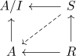
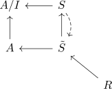
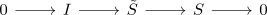
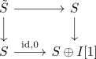

cotangent complex and formal smoothness
Proposition
Proof
affine case
For square-zero ideal $I \subseteq A$

Then a lift is equivalent to a section

to the pullback.
Then square zero extension mirrored under pullbacks
Fix an $S$ module $I$. Now square zero sections as R-algebras of $S$ by $I$ are equivalent to R derivations of $S$ into $I[1]$ ($I$ shifted by 1)
therefore

there exists a short exact sequence and the connecting morphis $S \rightarrow \Sigma I$ gives a derivation.
If one hase a section of $S \oplus I[1] \rightarrow S$ in animated commutative rings, then we send it to the pullback

gives a square zero extension.
Having a section $\tilde{S} \twoheadrightarrow S$ is equivalent to saying that the derivation $S \rightarrow S \oplus I[1]$ is trivial. But the cotangent complex classifies square zero extensions, so it is equivalent to $\pi_0(\mathrm{Hom}_{\mathcal{D}(S)_{\geq 0}}(\mathcal{L}_{S/R}, I[1])) = 0$
If $\mathcal{L}_{R/S}$ is projective, then $\pi_0(\mathrm{Hom}_{\mathcal{D}(S)_{\geq 0}}(\mathcal{L}_{S/R}, I[1]))$ is trivial. The proof in the other direction does need to use locally finite assumption